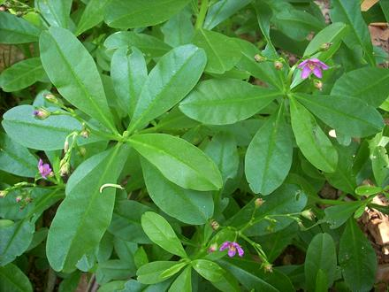

Waterleaf

[Gbure (Yoruba);
Ceylon Spinach (not unique); Cariru, Surinam Purslane, Philippine
Spinach, Florida Spinach, Potherb Fameflower, Lagos Bologi;
Nela basale (Kannada); Mon-mon ikong (Southeast Nigeria);
Talinum fruticosum syn Talinum triangulare of family
Talinaceae]
This plant originated in the Tropical Americas, from Peru north into
southern Mexico and east through the Caribbean. It is now grown as a
leafy vegetable through much of the tropical world. It is one of the
most important leafy greens in West Africa.
Photo by Manojk distributed under license Creative
Commons
Attribution-ShareAlike 3.0 Unported.
More on Carnations.
Cooking:
This leaf is mucilaginous, so it, and it's
substitutes, should be cooked briefly or they may become slimy.
Buying:
I have not seen this green sold anywhere in
Southern California. Using a substitute will be necessary in most
of North America.
Growing:
This plant requires a temperature range
of roughly 60 to 90 Degrees F. and likes an annual rainfall of more
than 200 inches, so isn't likely to succeed outside the tropics.
Subst:
Malabar Spinach, Common Purslane (closely
related), Lamb's Lettuce (not closely related).
Purslane is available in markets
serving a Latin American community, usually labeled "Verdolaga".
Malabar Spinach is available
in Asian markets, particularly those serving a Southeast Asian community.
Health & Nutrition:
Waterleaf is high
in vitamins A and C as well as iron and calcium, but this green should be
eaten in moderation. It has a fairly high amount of calcium oxalate in a
soluble form, which could be a problem for people with kidney disorders,
gout, and rheumatoid arthritis. It also contains hydrocyanic acid, but
that is destroyed by cooking. Caution should be used in feeding Water
Leaf to infants as it has substantial amounts of nitrates and nitrites
to which they are sensitive.
cn_watrlfz 180715 - www.clovegarden.com
©Andrew Grygus - agryg@clovegaden.com - Photos on this
page not otherwise credited are © cg1 -
Linking to and non-commercial use of this page permitted